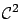
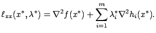
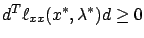
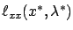

For the sake of completeness, we quickly
state the second-order conditions for constrained optimality;
they will not be used
in the sequel.
For the necessary condition,
suppose that  is a regular point of
is a regular point of  and a local minimum of
and a local minimum of  over
over  , where
, where  is defined by the equality
constraints (1.18) as before.
We let
is defined by the equality
constraints (1.18) as before.
We let  be the vector of Lagrange multipliers
provided by the first-order necessary
condition, and define the augmented
cost
be the vector of Lagrange multipliers
provided by the first-order necessary
condition, and define the augmented
cost  as in (1.27). We also assume that
as in (1.27). We also assume that  is
is

. Consider the Hessian of

The second-order necessary condition says that this Hessian matrix must be positive semidefinite on the tangent space to

for all
The second-order sufficient condition
says that a point  is a strict constrained local minimum of
is a strict constrained local minimum of  if
the first-order necessary condition for optimality (1.25) holds and,
in addition, we have
if
the first-order necessary condition for optimality (1.25) holds and,
in addition, we have

is positive definite on the tangent space